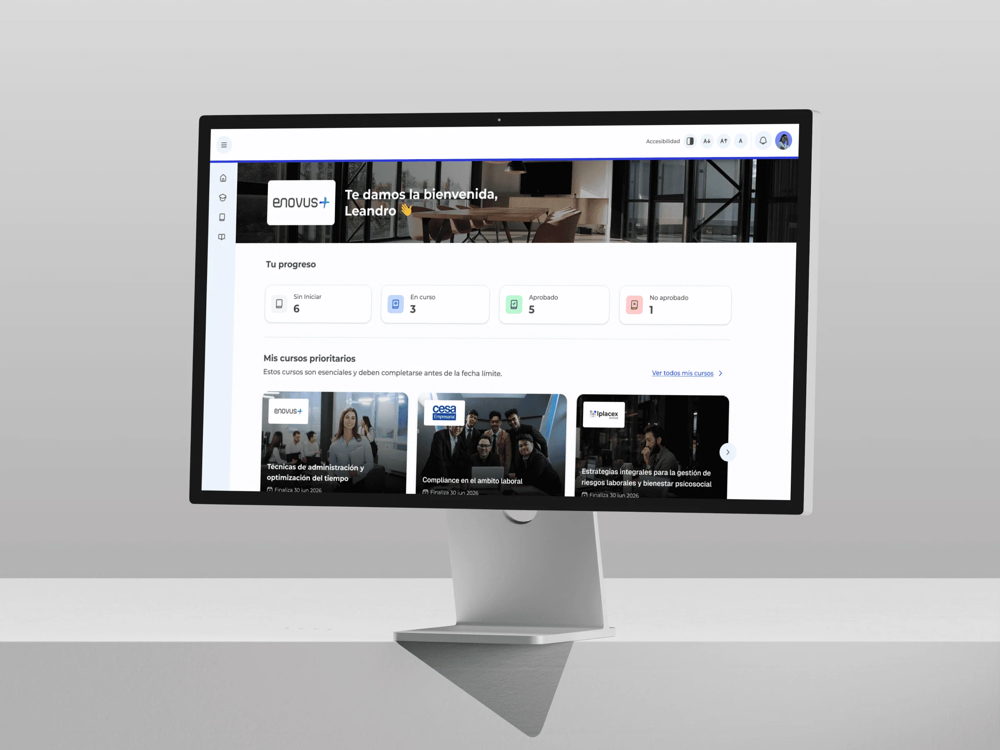
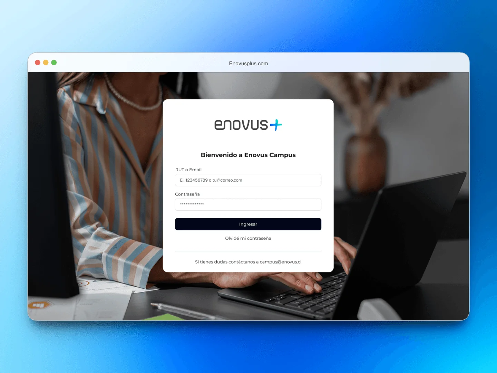
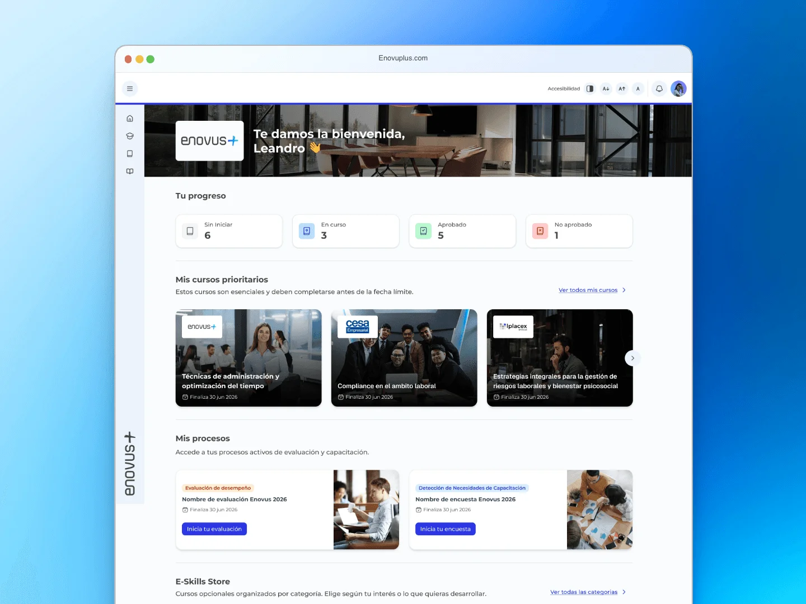
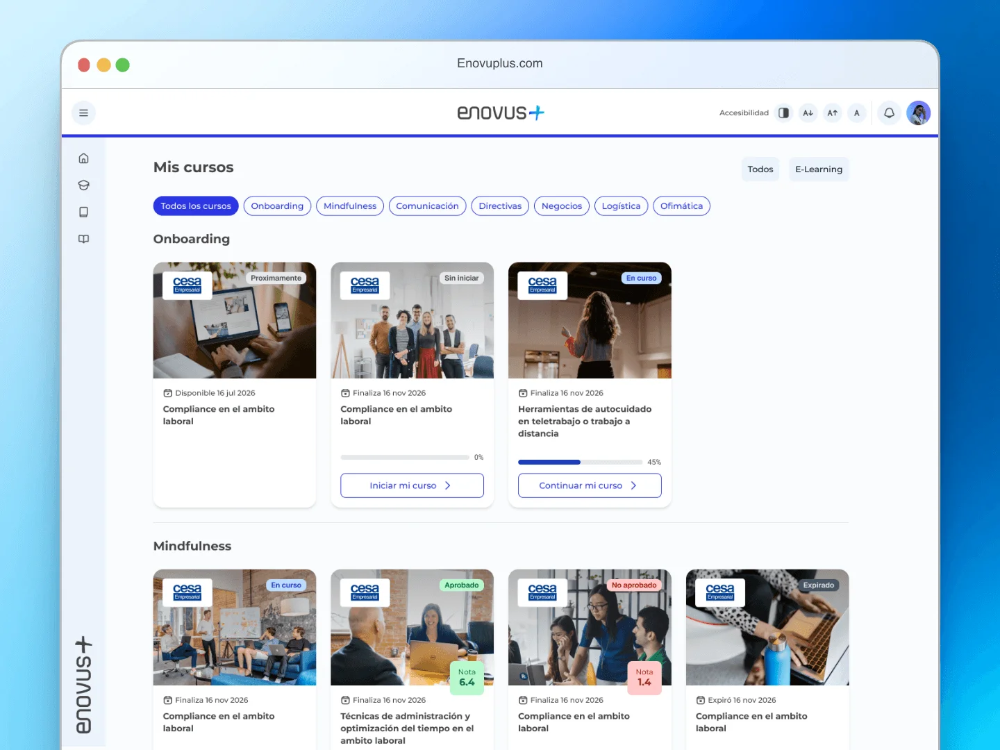

Enovus+ LMS
Enovus+ is Grupo Enovus's corporate training platform: more than 100 client companies and a catalog of over 250 courses, operating in Chile and Colombia. I joined as its first UX/UI designer, with no design system, no design files and no usage data. The starting point was the product already in production.

The problem
The platform wasn't broken: it just didn't guide anyone. Learners logged in and saw all their courses with the same visual weight, with no signal of where to start or what was urgent. The navigation worked, but you had to explore to make sense of it.
In corporate training the price is drop-off, and it's paid twice: the client that bought the training doesn't see the return, and Enovus's renewal rides on that number.
Underneath was a second problem: nothing was on record. No design system, no files for the screens, no usage metrics. Every decision had to come from what was in production and from talking to the people who used it.
What I did
- UX audit
- Product design
- Information architecture
- Design system
- Components and tokens
- UI design
Tools
- Figma
- Maze
- Photoshop
- Jitter
- Cursor
- Claude
- ChatGPT
Context
On the Enovus+ product team.

What I did
I started by auditing the six critical modules to find where the friction was highest. I prioritized the cross-cutting flows (login, home and my courses) over more complex modules like EDD (performance reviews), DNC (training needs assessment) and Clima (workplace climate surveys). The trade-off was deliberate: EDD had more internal requests piled up, but only some learners ever touch it; every learner goes through login and home, no exceptions.
With no usage data, I validated through testing: every flow I changed was tested with users before I called it done. It was slower than going on my own judgment, and it was the only way not to be guessing.
The home stopped being a passive screen and became ordered by priority: the courses a learner has to take first carry the most visual weight, the indicators came down to four real states, and color went from decoration to code: gray for not started, blue for in progress, green for passed, red for failed.
I also made it modular: if a learner has no active EDD or a recommendation doesn't apply to them, that section doesn't show. An empty section always raises a question with no answer, so I chose to hide what doesn't apply rather than show blank space.
In parallel I built the design system from scratch: components, tokens and patterns designed to scale across modules and across the two markets where Enovus operates.

The outcome
The time it takes a learner to go from logging in to starting their first course dropped by 64%, and "I don't know where to start" support tickets fell by 82%. The home stopped being a screen you had to interpret.
Login, home, my courses, EDD, DNC and Clima are live in Chile and Colombia, serving more than 100 client companies. The design system is now the foundation the team uses to stay consistent across modules and markets, and the reference for what comes next: the Admin view.
I joined as the first designer on a product that had been running for years without one. What stays behind isn't just the redesigned platform: it's a documented design rationale the team can keep applying without me in the room.
